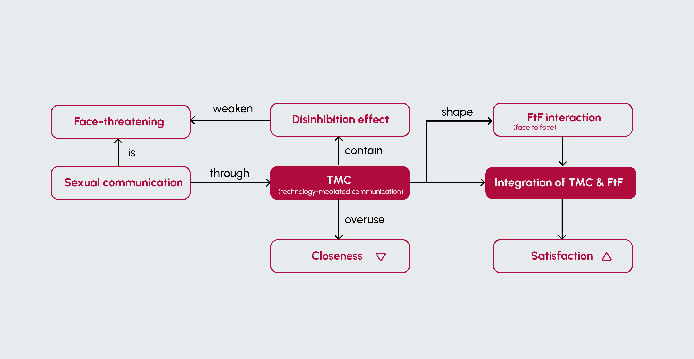

#Sexual communication
#Difficult conversation
#Multimodal interaction
Interlunar provides a novel multimodal interaction on how couples can communicate about sex. The integration of TMC (Technology-mediated communication) and FtF(Face to Face) interaction aims to stimulate FtF conversation through TMC with its disinhibition effect to reduce the discomfort of difficult conversations, and allows users to communicate naturally in a relaxed game atmosphere.
Sexual communication is the key to opening up a fulfilling and satisfying intimate relationship with your partner. It's not just about talking about sex, it's about really understanding each other's desires, boundaries, and needs in the bedroom. It's about creating a safe, nonjudgmental space where partners can express themselves openly and honestly without fear of rejection or misunderstanding. It's about actively listening to your partner, being empathetic, and validating their feelings. It's about expressing your desires confidently while respecting your partner's boundaries. It's about negotiating and finding a mutually satisfying solution. It's about building intimacy and connection through effective sexual communication. In short, better sexual communication is about fostering a healthy and satisfying sexual relationship based on mutual respect, understanding, and emotional intimacy.
From Literature and research, I learned the reason why sexual communication is difficult for many people, because it is face-threatening, which means when people talk about messages about sex or stigmatized identities will threaten the positive social value a person claims for themselves during an interaction.
One study found that technology-mediated communication plays an important role in communication among members of the stigmatized community of BDSM.
Technology results in less shame or embarrassment in disclosing stigmatized desires or aiding in moving past personal feelings of shyness. Discussing topics only through TMC can harm relationship satisfaction, while face-to-face discussions are noted to be more valuable for communication, especially for something as intimate as sex.
Research also found that Integration of TMC and FtF interaction was positively associated with relational satisfaction. At the same time, The very meaning of FtF interaction can be shaped by TMC.

Interlunar, is an integration of TMC with FtF interactions. it aims to stimulate FtF sexual communication through digital sexual communication.
The game can be divided into four steps, the first three parts will be conducted through TMC, the first part is a couple co-edited question list through the app, the second part is reading the questions together from the screen, and then giving the answer. Last step is face-to-face conversation based on the question or the mismatched answers.


This game was inspired by the popular American television show Newlyweds Game, which pits newlyweds against each other in a series of revealing rounds of questions to determine the degree to which spouses understand each other or do not.
If you were asked directly if there had been any previous communication problems between you and your partner, it would be hard to recall for a while. Let the couple discover where they misunderstood each other in the game and the conversation will happen naturally.
(Co-create Section)

(Co-create Section)